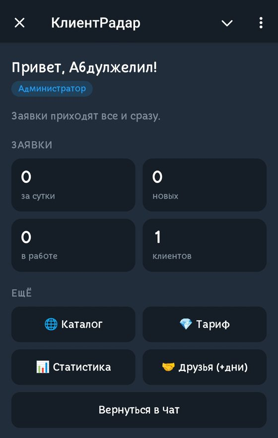
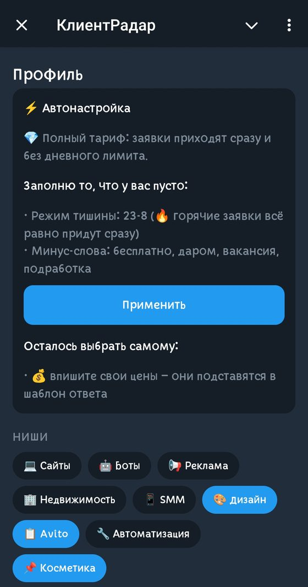
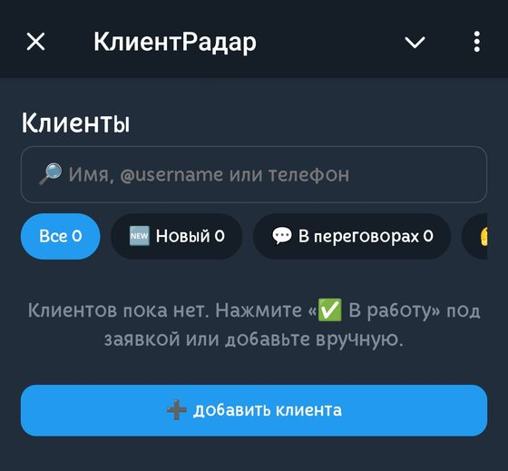
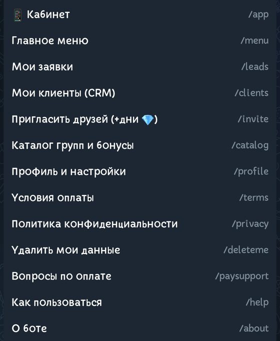

Находит заявки от клиентов в Telegram
КлиентРадар ищет людей, которым нужна ваша услуга, в Telegram-группах и каналах, присылает заявки и помогает вести клиентов — от первого сообщения до оплаты.
Бесплатный тариф: до 5 заявок в день. Выберите ниши и город — и сразу получите заявки за сутки.
Что умеет бот
Заявки по вашим нишам
Выберите ниши и город — бот пришлёт сообщения людей, которым нужна ваша услуга или товар.
Ничего не пишет в группах
Бот читает открытые группы и те, куда его добавил администратор, и ничего в них не пишет. Закрытые переписки не затрагиваются.
Защита от спама
Оценка сообщений, общий чёрный список и антидубли — вы получаете меньше мусора.
Своя CRM
Карточки клиентов, этапы сделки, заметки, бюджет, напоминания и поиск.
Быстрые действия
«Ответить», «В работу», «Отложить», «Отказ» — прямо под заявкой.
Каталог групп
Добавьте свою группу в каталог и получайте бонусные дни за заявки из неё.
Приглашения
Позовите коллег: бонусные дни получают оба, заявки можно передавать коллеге.
Статистика
Отчёты по заявкам и работе, рейтинг и уровни активных пользователей.
Как выглядит бот




📱 Кабинет в Telegram
Заявки, клиенты (CRM), профиль, тариф и статистика — в одном окне внутри Telegram. Открывается кнопкой «📱 Открыть кабинет» или командой /app, вход без пароля — по вашему аккаунту Telegram.
Четыре шага до результата
Откройте @klientradarbot и нажмите «Старт».
Выберите ниши, затем город.
Сразу получите заявки за последние сутки.
Ведите клиентов в CRM: заметки, этапы, напоминания.
Кому подойдёт
Мастера и специалисты
Электрики, мастера по ремонту, репетиторы, фотографы — те, кому нужны новые клиенты.
Агентства и студии
Недвижимость, сайты, реклама, юристы: ловите запросы в момент, когда человек ищет исполнителя.
Магазины и небольшой бизнес
Находите покупателей в городских группах и ведите их до оплаты в одной CRM.
Каталог, реклама и лицензия за заявки группы
Если у вас есть своя группа или канал, добавьте их в каталог КлиентРадар: за заявки из вашей группы вы получаете бонусные дни тарифа 💎. Заявками группы можно оплатить рекламу в каталоге: 20 заявок — 7 дней в блоке «Рекомендуем». А для защиты самой группы есть бот модерации Modexa — заявки группы можно обменять и на его лицензию.
Сколько это стоит
Бесплатный
До 5 заявок в день с небольшой задержкой. Своя CRM, ниши и город.
Полный 💎
Заявки сразу и без дневного лимита. Дни — за приглашения и свои группы или покупкой в боте.
Условия могут меняться — актуальная информация в боте.
Частые вопросы
Откуда берутся заявки?
Из открытых Telegram-групп и каналов, из групп, куда бота добавил администратор, и из групп, которые владелец включил из бота модерации. В закрытые переписки бот не заходит и в группах ничего не пишет.
Бот собирает данные людей?
Бот не собирает номера телефонов и закрытые переписки. Из открытых сообщений сохраняется текст заявки, имя и публичный ник автора — не дольше 90 дней. Удалить свои данные можно командой /deleteme, автор сообщения может написать @Abdylzhelil05.
Как выбрать, какие заявки получать?
При старте вы выбираете ниши и город. Слова, минус-слова и режим тишины можно настроить в боте.
Можно ли передать заявку коллеге?
Да, кнопка «📨 Коллеге» на карточке заявки отправляет её другому пользователю бота.
Начните получать заявки
Выберите ниши и город — первые заявки придут сразу.